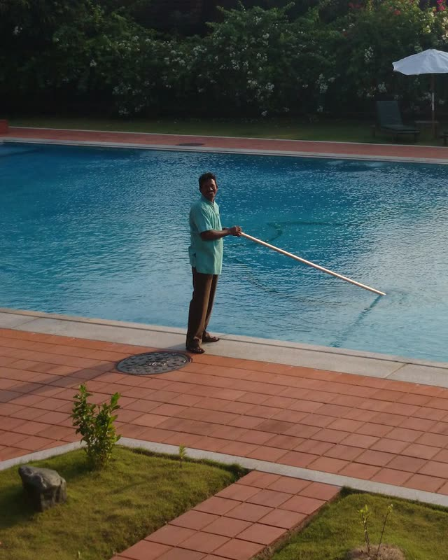

Layered intelligence for the home service industry.
We connect the tools you already run and automate the busywork around them.
Free 30-minute call, no obligation.
Built for the trades that keep homes running
Custom tools for scheduling, dispatch, invoicing and customer follow-up, or anything else your office needs.





Case study
From a paper calendar and printed routes to online, semi-automated scheduling, dispatch and routing.
One example: a family-owned water-feature contractor with 250-odd accounts, in production since August 2026. We build the same way for billing, reports, or anything custom.
-
BeforeA hand-copied wall calendar, a full day every month
NowA recurring schedule built automatically from the notes they already keep
-
BeforePrinted route sheets, about an hour every day
NowRoutes optimized around geography and morning traffic
-
BeforeThe crew working off a clipboard
NowThe day's stops, gate codes, and warnings on each crew phone
On pace for a full year
- 1,500+ auto-scheduled visits
- 250+ office hours saved, estimated
- The owner approves every route before it goes out.
- Every visit logged to the minute, even with no signal.
- Reads your QuickBooks, never edits it. QuickBooks stays the books.
Works with the tools you already use
Don't see yours? If it has an export or an API, we can almost certainly connect it.
Who you're working with
Thomas Ankenbrandt
Co-FounderI'm an electrical engineer from Cal Poly SLO. Before Somerset, I built custom tools for nonprofits and automation software at Couchbase, a database software company in San Jose.
Our goal at Somerset is to give home service business owners back their time and help them grow through automation. Outside of work, I love guitar, singing, and playing basketball. I'm also on the hunt for California's best breakfast burrito, so let me know if you have any recommendations. Reach out if you have questions about Somerset, or if you'd just like to connect!
Victor Josifovski
Co-FounderI come to Somerset Systems from a non-technical background, having studied political science at UC San Diego and worked across several legal organizations as an aspiring lawyer.
Working with law firms and nonprofits has given me an interest in how different organizations structure their work and the systems that keep them running day to day. What drew me to Somerset is the opportunity to understand those systems and use a new generation of software tools to make them work better.
Away from work, you'll find me reading or training jiu-jitsu.
Straight answers
Most of those tools show you one system at a time, and each counts things its own way. What QuickBooks calls revenue, what your field software calls a finished job, and what your CRM calls an active customer rarely line up. We build one view around how you run, with the numbers that matter to you defined once, so every system tells the same story.
Then we automate the work around it. Documents are drafted from your live data, follow-ups and reminders are drafted and queued for your approval, and owner reports are written for you each morning. Nothing goes out to a client until someone on your team approves it.
Yes. We connect through the official, secure integrations each tool already provides, the same ones your accountant or other trusted apps use. Where the work only requires reading your data, we use read-only access. We never ask for your passwords, and we never sell or share your data. If you handle sensitive financial or customer records, we document exactly what is accessed and put it in writing in the agreement.
Nothing goes out to a client automatically. The system drafts documents from your real data, someone on your team reviews them, and they only send once you approve. The AI handles the writing, while your people keep the final judgment. We also tune it on your own templates and language, so the drafts read like your business rather than a generic chatbot.
Not a long one, and you pick the shape. Either a setup fee with a six-month minimum, or no setup fee at all with twelve. The build happens up front, so the minimum is what covers it. After that you are month to month and can cancel if it stops earning its keep. No auto-renewing years, no setup tricks. We would rather keep your business because the system works than because you are locked in.
Pricing is based on the size of your operation and the scope of the build. The strategy call is free, with no commitment on either side, and we give you exact numbers before any work begins. Nothing is priced before we have seen how you actually run.
Everything it takes to keep the system running. That includes updates, integration maintenance, small changes as your business evolves, and direct access to us when something needs adjusting.
Ready to see what's possible?
A 30-minute conversation about your operation, with no pitch deck and no obligation on either side.
Book a Demo (opens in a new tab)Prefer to talk? Call (805) 457-5035